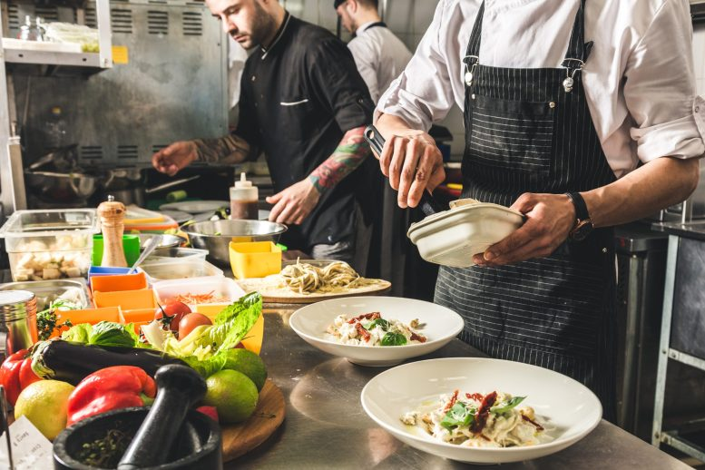
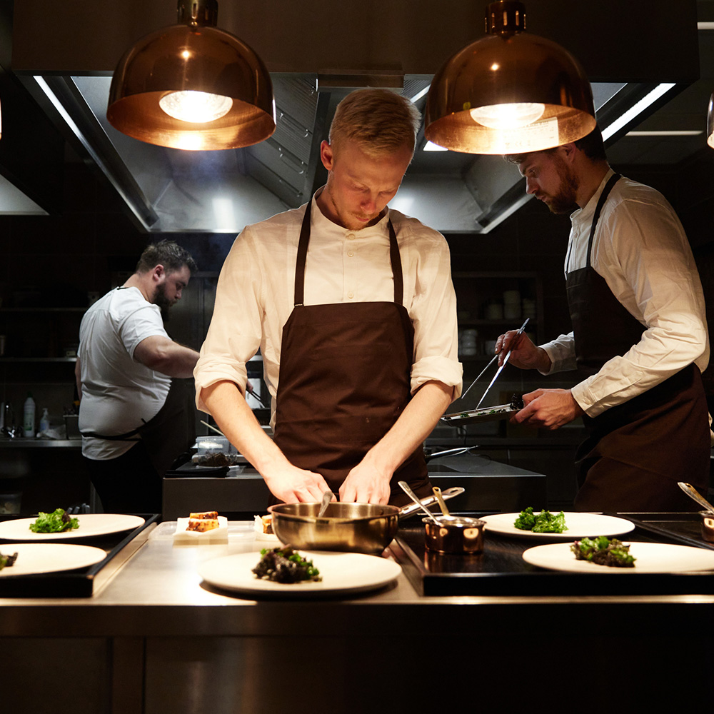
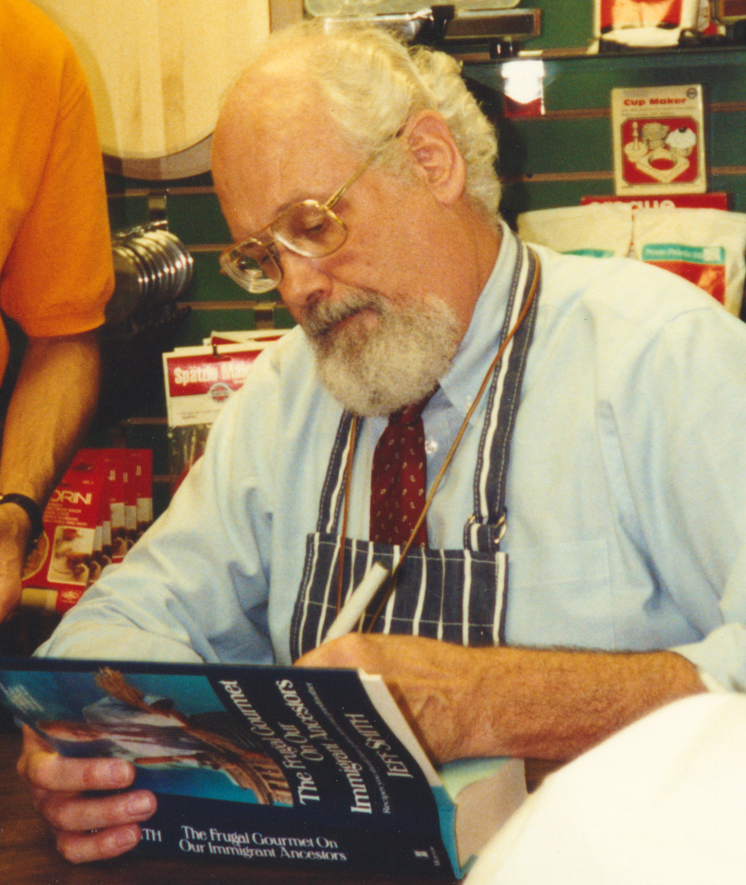
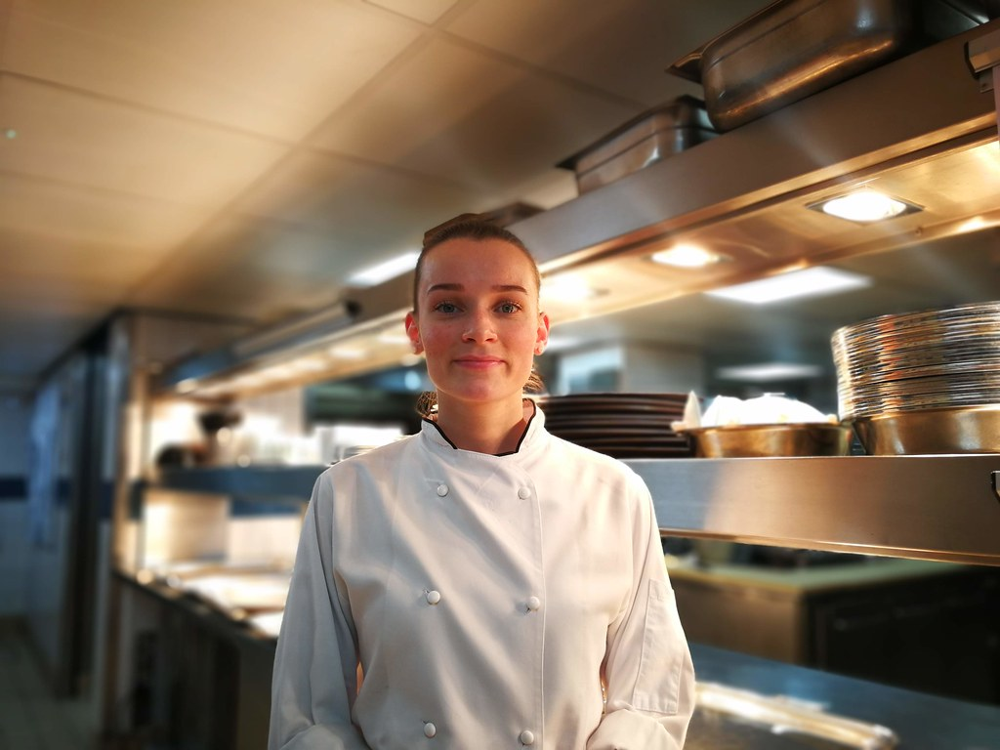

Our History
 
The Founder
 Giovanni — Founder
Born in Naples and a lifelong lover of food, Giovanni opened the Three Quarters with one goal: to bring Italian home cooking to everyone.
Head Chef
 Elena — Head Chef
Elena is the current Head Chef and her passion for authentic cuisine quickly made her an essential part of the family.